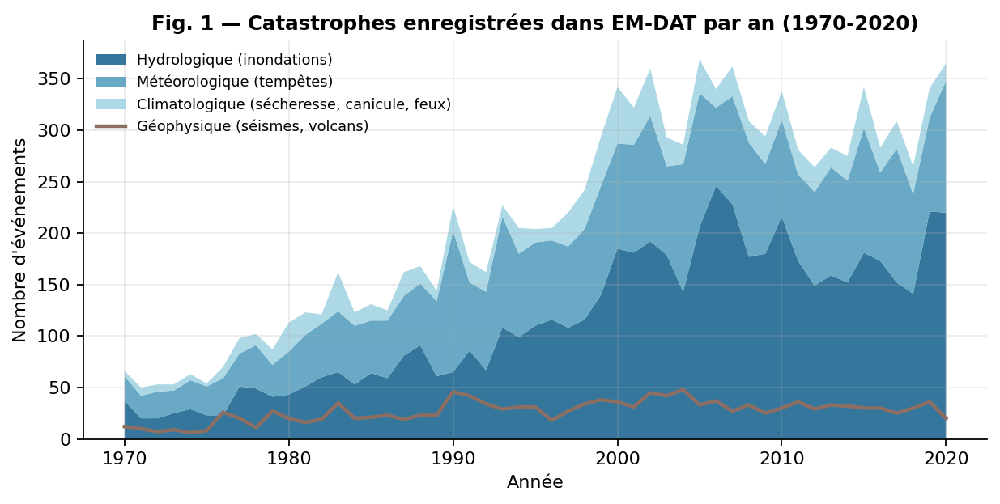
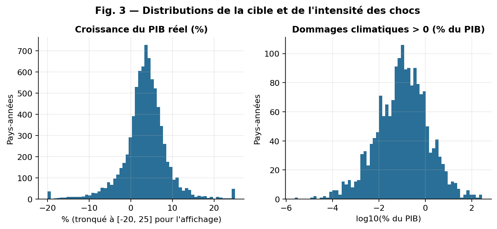
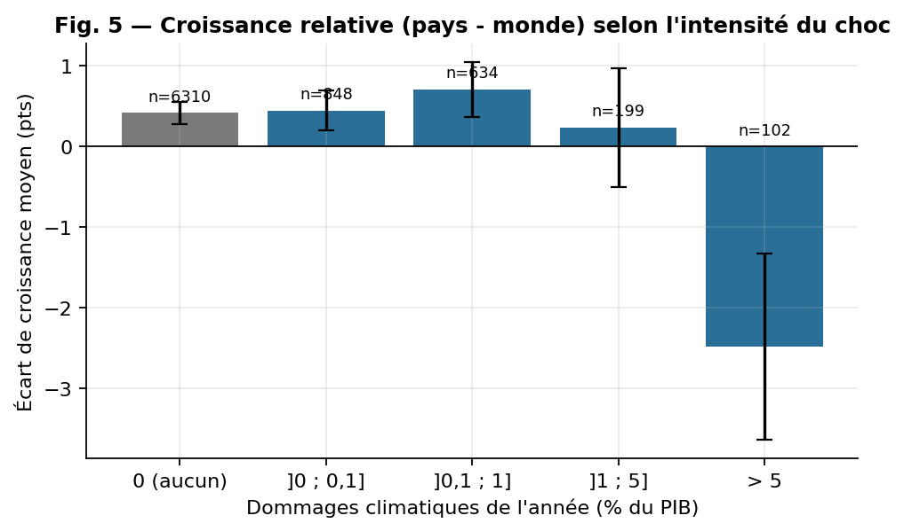
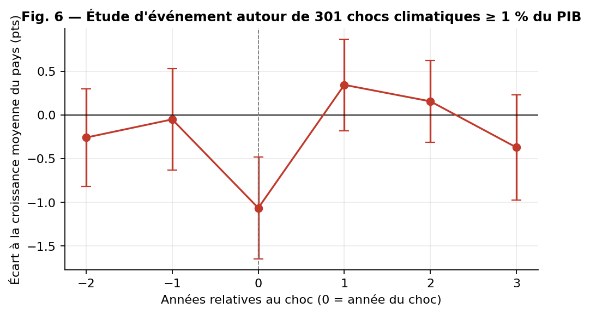
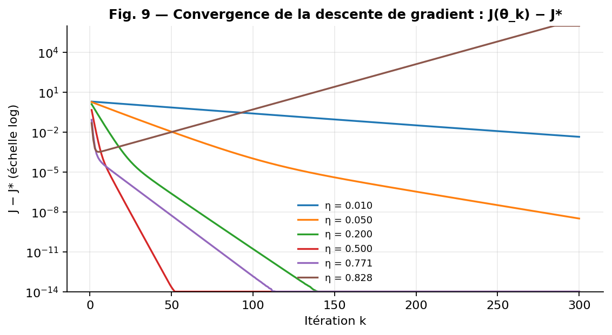
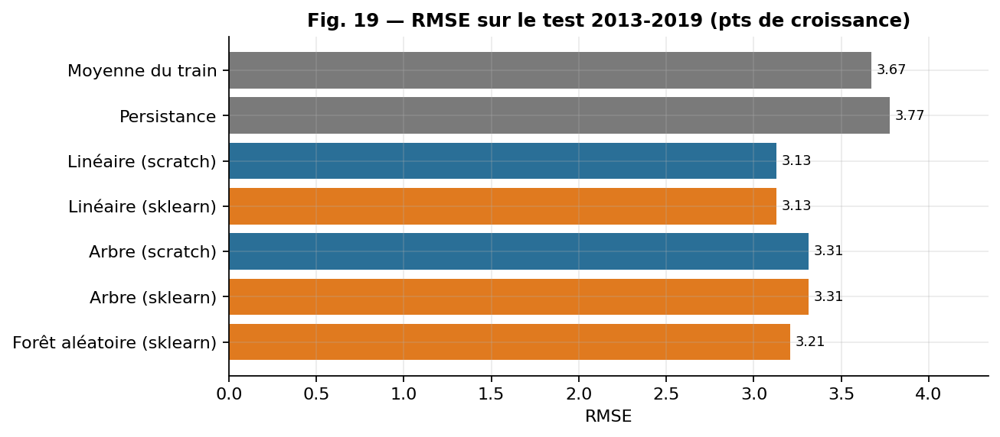

Les catastrophes climatiques sont de plus en plus fréquentes et coûteuses. Pour un petit État insulaire, un seul cyclone peut détruire plus que la production annuelle du pays. Mais l'effet sur la croissance n'est pas évident : la destruction du capital fait baisser la production, alors que la reconstruction peut la stimuler ensuite.
Question. Les catastrophes climatiques subies par un pays une année donnée réduisent-elles sa croissance économique, et de combien ? L'effet persiste-t-il l'année suivante ?
Tâche d'apprentissage. Régression supervisée. La cible $y_{it}$ est la croissance annuelle du PIB réel (%) du pays $i$ l'année $t$. Les variables explicatives sont l'exposition aux catastrophes ($t$ et $t-1$) et des contrôles macroéconomiques.
Critères de succès (définis avant les expériences) : (i) battre des références naïves (moyenne, persistance) sur une période de test postérieure à l'entraînement ; (ii) ablation : le modèle « contrôles + catastrophes » doit avoir une erreur hors échantillon plus faible que le modèle « contrôles seuls », ce qui teste directement la question ; (iii) des effets stables, mesurés par des intervalles de confiance bootstrap ; (iv) des implémentations from scratch qui reproduisent scikit-learn.
| Jeu | Source / URL Kaggle | Contenu |
|---|---|---|
| Catastrophes naturelles 1970–2021 | EM-DAT (CRED, UCLouvain)kaggle.com/datasets/brsdincer/all-natural-disasters-19002021-eosdis | 14 644 événements : pays, année, type, morts, sinistrés, dommages (k USD) |
| PIB mondial | Banque mondiale (WDI)kaggle.com/datasets/zgrcemta/world-gdpgdp-gdp-per-capita-and-annual-growths | PIB courant, PIB/hab, croissance du PIB réel, 1960–2020 |
Nous retenons les catastrophes climatiques au sens EM-DAT : hydrologiques (inondations, glissements), météorologiques (tempêtes) et climatologiques (sécheresses, températures extrêmes, feux). Les catastrophes géophysiques (séismes, volcans) servent de groupe de comparaison, car elles ne dépendent pas du climat. Les épidémies et infestations sont exclues.

src/data_prep.py)Les catastrophes sont agrégées par (pays, année), puis fusionnées avec la Banque mondiale. Un pays-année sans catastrophe enregistrée reçoit 0. Pour comparer des pays de tailles très différentes, chaque intensité est rapportée à la taille de l'économie, puis transformée par $\log(1+x)$ car les distributions sont très asymétriques (fig. 3).
| Variable | Définition |
|---|---|
log_dmg_climate_pct | $\log(1+\text{dommages climatiques en \% du PIB})$, année $t$ |
log_dmg_climate_pct_lag1 | idem, année $t-1$ (effet retardé / reconstruction) |
log_deaths_climate_pm | $\log(1+\text{morts par million d'habitants})$ |
log_affected_climate_pct | $\log(1+\text{sinistrés en \% de la population})$ |
n_hydro, n_meteo, n_climato | nombre d'événements par groupe |
log_dmg_geo_pct | dommages géophysiques en % du PIB (comparaison) |
growth_lag1 | croissance de l'année précédente (inertie) |
log_gdppc_lag1 | log du PIB par habitant en $t-1$ (niveau de développement) |
world_growth | croissance mondiale en $t$ (cycle global) |
Seules 30–40 % des catastrophes ont un montant de dommages renseigné (fig. 4). Un montant manquant est compté comme 0. Cette hypothèse forte sous-estime les chocs, surtout dans les pays pauvres. Nous la compensons en partie avec des variables toujours renseignées : morts, sinistrés et nombre d'événements. La hausse des enregistrements depuis 1970 (fig. 1) reflète en partie un meilleur recensement, pas seulement plus de catastrophes.




L'étude d'événement (fig. 6) donne la meilleure intuition descriptive. Avant le choc, la croissance est proche de sa moyenne. L'année du choc, elle chute d'environ 1,1 point (IC 95 % excluant 0). L'année suivante, elle repasse légèrement au-dessus de la normale. Ce profil justifie d'inclure les dommages en $t$ et en $t-1$. Les corrélations brutes restent faibles (|ρ| < 0,1) : la croissance dépend d'abord de son inertie et du cycle mondial.
Le découpage est chronologique : train 1971–2005 (5 174 obs.), validation 2006–2012 (1 359), test 2013–2019 (1 371, utilisé une seule fois). L'année 2020 (189 obs., COVID) est un stress test séparé. Un découpage aléatoire placerait des années futures dans l'entraînement et surestimerait la performance, car les séries de croissance sont autocorrélées. Les bornes de winsorisation de la cible (1er/99e centiles : [−13,5 ; 21,3] %, qui neutralisent les guerres et les booms pétroliers) et les paramètres de standardisation sont estimés sur le train uniquement. Les retards vérifient que l'année $t-1$ existe bien.

src/scratch_linear.py)Modèle. $\hat y_i=\mathbf{w}^\top\mathbf{x}_i+b$, avec $\mathbf{x}_i\in\mathbb{R}^{11}$ standardisé. Objectif (MSE + pénalité L2, biais non pénalisé) :
$$J(\mathbf{w},b)=\frac{1}{2n}\sum_{i=1}^{n}\left(\mathbf{w}^\top\mathbf{x}_i+b-y_i\right)^2+\frac{\alpha}{2}\lVert\mathbf{w}\rVert^2 .$$Gradient. Avec $\mathbf{r}=X\mathbf{w}+b\mathbf{1}-\mathbf{y}$ : $\nabla_{\mathbf{w}}J=\tfrac1n X^\top\mathbf{r}+\alpha\mathbf{w}$, $\ \partial_b J=\tfrac1n\mathbf{1}^\top\mathbf{r}$.
Optimisation. Trois procédures, toutes codées à la main :
np.linalg.solve.Incertitude. Les observations d'un même pays sont corrélées dans le temps. Nous utilisons donc un bootstrap par pays, implémenté from scratch : 500 tirages de pays entiers avec remise, réajustement du modèle, puis percentiles 2,5 / 97,5 %.
Pourquoi ce modèle ? La question porte sur l'influence des catastrophes. Un modèle linéaire donne des coefficients interprétables (points de croissance par unité de choc) assortis d'intervalles de confiance.
src/scratch_tree.py)Modèle. L'arbre partitionne l'espace en régions $R_m$ et prédit la moyenne locale : $\hat f(\mathbf x)=\sum_m c_m\mathbb 1\{\mathbf x\in R_m\}$, avec $c_m=\bar y_{R_m}$. Impureté : $\mathrm{SSE}(R)=\sum_{i\in R}y_i^2-(\sum_{i\in R}y_i)^2/|R|$. Construction gloutonne récursive : à chaque nœud, on choisit la coupure $(j,s)$ qui maximise
$$\Delta(j,s)=\mathrm{SSE}(R)-\mathrm{SSE}(R_{x_j\le s})-\mathrm{SSE}(R_{x_j>s}).$$Après tri selon $x_j$, les sommes cumulées de $y$ et $y^2$ évaluent toutes les coupures en $O(n)$, soit
$O(p\,n\log n)$ par niveau. Le seuil est le milieu entre deux valeurs distinctes consécutives. Arrêt :
max_depth, min_samples_leaf, ou absence de coupure améliorante. Importance d'une
variable : somme des gains $\Delta$ qu'elle procure, normalisée.
Pourquoi un arbre ? L'effet d'un choc peut être non linéaire : nul en dessous d'un seuil, brutal au-delà, et dépendant du niveau de développement. Un arbre capture seuils et interactions sans les spécifier à l'avance.



Avec $n=5\,174$ observations pour 11 variables peu colinéaires, la régularisation est inutile ($\alpha^*=0$). L'arbre
retenu a max_depth = 8 et min_samples_leaf = 100, soit 40 feuilles.
| Méthode | Implémentation | fit (ms) | RMSE val | MAE test | RMSE test | R² test | max |Δŷ test| |
|---|---|---|---|---|---|---|---|
| MCO | from scratch | 0,4 | 4,014 | 1,973 | 3,130 | 0,244 | ≈ 0 (10−14) |
| scikit-learn | 1,8 | 4,014 | 1,973 | 3,130 | 0,244 | ||
| Ridge (DG) | from scratch | 5,2 | 4,014 | 1,973 | 3,130 | 0,244 | ≈ 0 (10−7) |
| scikit-learn | 1,7 | 4,014 | 1,973 | 3,130 | 0,244 | ||
| SGD | from scratch | 164 | 4,017 | 1,972 | 3,130 | 0,245 | 0,90 |
| scikit-learn | 8,6 | 4,009 | 1,974 | 3,137 | 0,241 | ||
| Arbre CART | from scratch | 69 | 4,081 | 2,138 | 3,314 | 0,153 | 0 (arbres identiques, 40 feuilles) |
| scikit-learn | 16 | 4,081 | 2,138 | 3,314 | 0,153 |
Les implémentations from scratch donnent exactement les mêmes modèles que scikit-learn : coefficients identiques pour MCO/Ridge, et arbre identique (mêmes coupures, mêmes importances, mêmes 40 feuilles). La SGD diffère légèrement, ce qui est attendu : les calendriers de pas et l'ordre de tirage ne sont pas les mêmes, mais les métriques sont équivalentes. Côté coût, notre arbre est ~4× plus lent (boucle Python sur les variables et les nœuds, prédiction observation par observation) contre du Cython pour scikit-learn. Les deux croissent en $O(n\log n)$ (fig. 13). Notre SGD est lente, car la boucle sur les mini-lots est écrite en Python.



| Modèle | MAE test | RMSE test | R² test | RMSE 2020 |
|---|---|---|---|---|
| Moyenne du train | 2,53 | 3,67 | −0,04 | 9,66 |
| Persistance ($\hat y_t=y_{t-1}$) | 2,18 | 3,77 | −0,10 | 8,82 |
| Linéaire (from scratch) | 1,97 | 3,13 | 0,244 | 6,65 |
| Arbre CART (from scratch) | 2,14 | 3,31 | 0,153 | 7,93 |
| Forêt aléatoire (sklearn, référence) | 2,06 | 3,21 | 0,206 | — |
Le modèle linéaire bat toutes les références, y compris la forêt aléatoire. Il explique environ un quart de la variance de la croissance : la croissance d'un pays dépend surtout de facteurs absents de notre modèle (politiques économiques, conflits, prix des matières premières). En 2020, tous les modèles échouent ($R^2<0$). Le choc COVID dépasse de loin tout ce qui a été observé à l'entraînement, et la croissance mondiale de −3 % ne suffit pas à le décrire. C'est un cas typique de décalage de distribution.
| Échantillon | Modèle | RMSE (tous) | R² (tous) | RMSE (pays frappés*) |
|---|---|---|---|---|
| Validation | contrôles seuls | 4,052 | 0,298 | 3,191 |
| + catastrophes | 4,014 | 0,311 | 2,999 (−6,0 %) | |
| Test | contrôles seuls | 3,157 | 0,232 | 3,080 |
| + catastrophes | 3,130 | 0,244 | 2,807 (−8,9 %) |
* pays-années avec dommages climatiques > 0,1 % du PIB (145 en validation, 152 en test).


| Dommages (% PIB) | Effet année $t$ (pts) | IC 95 % | Effet $t+1$ (pts) | Effet cumulé (pts) | IC 95 % cumulé |
|---|---|---|---|---|---|
| 1 % | −0,45 | [−0,73 ; −0,18] | +0,22 | −0,23 | [−0,52 ; 0,06] |
| 5 % | −1,15 | [−1,88 ; −0,47] | +0,57 | −0,59 | [−1,35 ; 0,16] |
| 10 % | −1,55 | [−2,52 ; −0,63] | +0,76 | −0,79 | [−1,80 ; 0,22] |
| 50 % | −2,53 | [−4,13 ; −1,03] | +1,24 | −1,29 | [−2,95 ; 0,35] |
L'effet de l'année du choc est négatif et significatif. Le coefficient retardé est positif (IC 95 % [0,00 ; 0,65]) : c'est l'effet de reconstruction. Il compense environ la moitié de la perte initiale. L'effet cumulé sur deux ans reste négatif, mais son intervalle inclut 0. Ces ordres de grandeur rejoignent la littérature empirique sur le sujet (Noy, 2009 ; Felbermayr & Gröschl, 2014). Les autres résultats :
L'arbre retenu sur la validation n'utilise quasiment pas les catastrophes. Elles représentent 0,5 % de
l'importance, contre 61 % pour growth_lag1, et sa dépendance partielle est plate (fig. 16). Ce n'est pas
un bug, puisque l'arbre est identique à celui de scikit-learn, mais une limite structurelle : seuls 3,7 % des
pays-années subissent un choc supérieur à 1 % du PIB. Une feuille d'au moins 100 observations ne peut pas isoler ces
cas, et le critère glouton préfère les coupures sur l'inertie, qui réduisent bien plus la SSE. Un arbre moins contraint
(feuilles ≥ 20) utilise les catastrophes (7 % de l'importance) et retrouve un effet négatif en marche, d'environ
−0,35 pt au-delà de 0,5 % du PIB. Mais sa variance est plus forte et sa RMSE de validation plus élevée (4,15 contre
4,08). Le modèle linéaire, lui, mutualise toute l'information dans un seul coefficient : il est statistiquement plus
efficace pour détecter un effet moyen modéré porté par une variable rare. L'arbre approxime aussi la relation inertie →
croissance, quasi linéaire, par une fonction en escalier (8 paliers), ce qui coûte en précision.

Nous avons implémenté from scratch une régression linéaire/Ridge (trois solveurs) et un arbre CART. Ils reproduisent scikit-learn à la précision machine. Appliqués à 50 ans de données sur 201 pays, ils répondent ainsi à la question : les catastrophes climatiques réduisent significativement la croissance l'année du choc, d'environ 0,45 pt pour des dommages de 1 % du PIB et 1,5 pt pour 10 %. Un rebond partiel suit l'année suivante. Elles améliorent la prédiction hors échantillon, surtout pour les pays touchés (−9 % de RMSE). Leur poids reste toutefois faible face aux autres déterminants de la croissance. Le modèle linéaire, simple et interprétable, est ici préférable à l'arbre : l'information pertinente est portée par des événements rares, qu'un arbre peine à isoler.
[1] EM-DAT, CRED / UCLouvain, The International Disaster Database, www.emdat.be — via Kaggle : brsdincer/all-natural-disasters-19002021-eosdis.
[2] Banque mondiale, World Development Indicators — via Kaggle : zgrcemta/world-gdpgdp-gdp-per-capita-and-annual-growths.
[3] Breiman, L., Friedman, J., Olshen, R., Stone, C. (1984). Classification and Regression Trees. Wadsworth.
[4] Hastie, T., Tibshirani, R., Friedman, J. (2009). The Elements of Statistical Learning, 2e éd., chap. 3 et 9. Springer.
[5] Boyd, S., Vandenberghe, L. (2004). Convex Optimization, chap. 9 (descente de gradient). Cambridge University Press.
[6] Noy, I. (2009). The macroeconomic consequences of disasters. Journal of Development Economics, 88(2), 221–231.
[7] Felbermayr, G., Gröschl, J. (2014). Naturally negative: The growth effects of natural disasters. Journal of Development Economics, 111, 92–106.
[8] Cameron, A. C., Gelbach, J., Miller, D. (2008). Bootstrap-based improvements for inference with clustered errors. Review of Economics and Statistics, 90(3).
[9] Pedregosa, F. et al. (2011). Scikit-learn: Machine Learning in Python. JMLR, 12, 2825–2830 (utilisé uniquement pour le benchmark et les métriques).